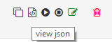
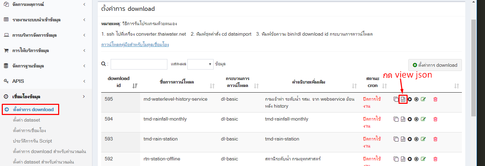
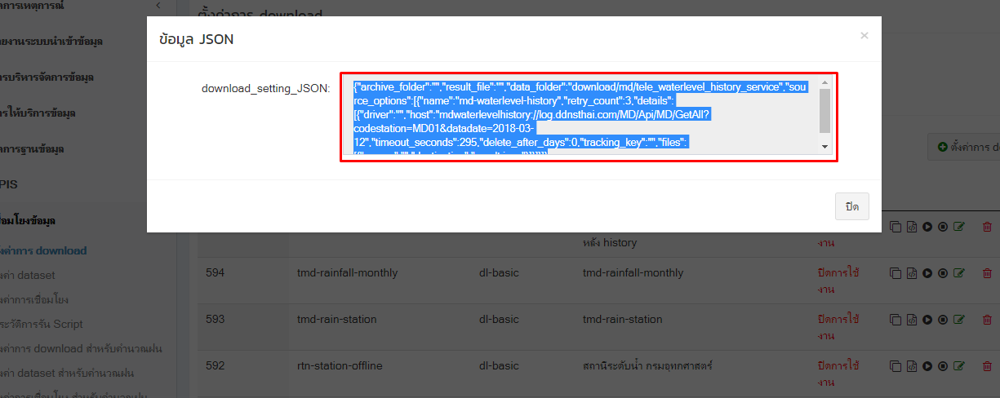
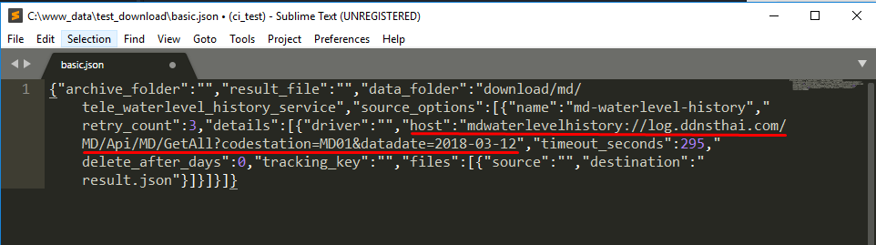
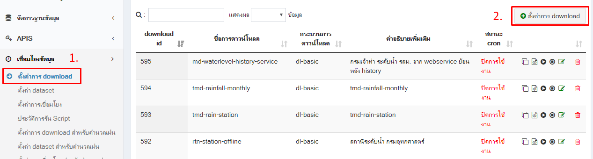
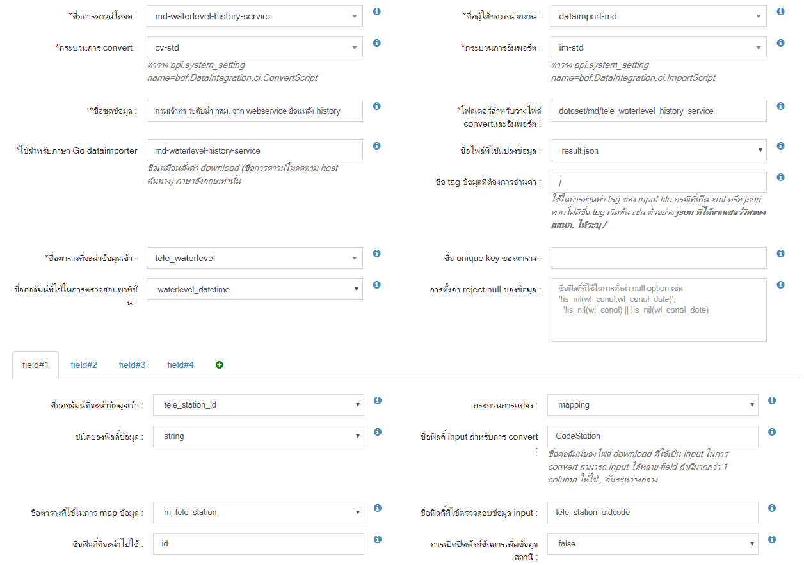
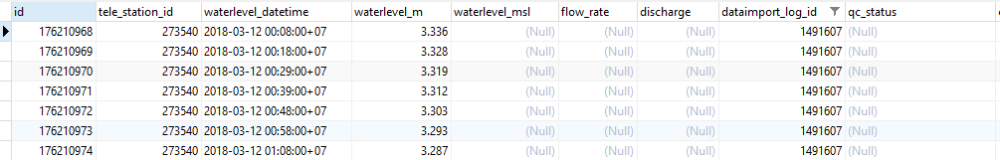

ขั้นตอนการเชื่อมโยงข้อมูลระดับน้ำกรมเจ้าท่า (ย้อนหลัง) โดยใช้ Web Service
ข้อมูลระดับน้ำของกรมเจ้าท่า มีสถานีทั้งหมด 12 สถานี โดยเรียกใช้ API ร่วมกัน 2 ชุด
- API สำหรับใช้ในการอ่านค่าสถานี
http://log.ddnsthai.com/MD/Api/MD/GetAll
- API สำหรับอ่านข้อมูลระดับน้ำย้อนหลัง
http://log.ddnsthai.com/MD/Api/MD/GetLevel?codestation={รหัสสถานี}&datadate={วันที่}
พารามิเตอร์ ชื่อ ตัวอย่างข้อมูล codestation รหัสสถานี MD01 datadate รูปแบบวันที 2018-01-01
ตั้งค่าโปรแกรม Eclipse เพื่อให้ Run Dataimport บน Local
กดเมนู Run (ไอคอนสีเขียว) -> เลือก Run Configurations

เลือก tab main
ตั้งค่า Project Path
thaiwater30
ตั้งค่า Go package to build
haii.or.th/dataimport/downloader/dl-basic

เลือก tab Arguments
ตั้งค่า Program Arguments
ก่อนตั้งค่า Program Arguments ให้สร้าง folder ไว้ที่ c:/www_data/test_download
จากนั้น สร้างไฟล์ basic.json ลงใน c:/www_data/test_download/basic.js
เข้า backoffice->เชื่อมโยงข้อมูล->ตั้งค่าการ download
เลือก รายการตั้งค่า download มา 1 รายการ
จากนั้น กด view json


คัดลอก ข้อมูลใน download_setting_json

นำไปวางไว้ในไฟล์ c:/www_data/test_download/basic.js แล้วบันทึกไฟล์
บรรทัดที่ขีดเส้นใต้สีแดง ค่า host เป็นกำหนด url:webservice สำหรับอ่านข้อมูล

-verbose
-datapath c:/www_data/test_download
-testcfg c:/www_data/test_download/basic.json

เริ่มเขียน Dataimport Driver ด้วยภาษา Golang
1. เพิ่ม folder สำหรับเก็บไฟล์ driver.go ใช้ชื่อ md_waterlevel_history ตาม path
src\haii.or.th\dataimport\downloader\driver\md_waterlevel\driver.go

ตั้งชื่อ Package ให้สอดคล้องกับ โฟลเดอร์
package md_waterlevel_history import { ... }
2. เปิดไฟล์ connector.go ทำการแก้ไข 2 จุด ดังนี้
src\haii.or.th\dataimport\downloader\connector.go
เพิ่ม import driver ตัวใหม่ .... บรรทัดที่ 8-35
import ( ... "haii.or.th/dataimport/downloader/driver/md_waterlevel_history" )
เพิ่ม NewConnector ตัวใหม่ .... บรรทัดที่ 42-66
var knownConnectionType = map[string]NewConnectionFn{ ... "mdwaterlevelhistory": md_waterlevel_history.NewConnector, }
key connnector "mdwaterlevelhistory" md_waterlevel_history.NewConnector, *key ตัวเล็กหมด ติดกันเท่านั้น ห้ามมีอักขระพิเศษ
3. update code บนเครื่อง server converter
Server : converter cd go_local/src/haii.or.th/dataimport make pull install
4. เพิ่ม driver type ใน table เพื่อให้ backoffice สามารถมองเห็นใน dropdown
host : https://192.168.12.136/phpPgAdmin schema : api table : system_settiing data ID : 66 colunm name : name colunm value : bof.DataIntegration.dl.DownloadType { "text": "md_waterlevel_history://", "value": "mdwaterlevelhistory://" }

หากเพิ่มข้อมูลครบถ้วน ชื่อ driver : md_waterlevel_history จะเพิ่มเข้ามา

5. ตั้งค่า download ใน backoffice เมนูเชื่อมโยงข้อมูล-ตั้งค่าการ download


การตั้งค่าโฮสและส่งค่าพารามิเตอร์ เพื่อ Run ข้อมูลย้อนหลัง
log.ddnsthai.com/MD/Api/MD/GetAll?codestation=MD01&datadate=2018-03-12
| ชุดข้อมูล | codestation (รหัสสถานี) | datadate (วันที่ ) |
|---|---|---|
| ข้อมูลสถานี ( ทั้งหมด ) ( วันปัจจุบัน ) | ว่าง | ว่าง |
| ข้อมูลสถานี ( ทั้งหมด ) ( รายวัน ) | ว่าง | 2018-01-01 |
| ข้อมูลสถานี ( ทั้งหมด ) ( รายเดือน ) | ว่าง | 2018-01 |
| ข้อมูลสถานี ( ทั้งหมด ) ( รายปี ) | ว่าง | 2018 |
| ข้อมูลสถานี ( MD01 ) (วันปัจจุบัน) | MD01 | ว่าง |
| ข้อมูลสถานี ( MD01 ) ( รายวัน ) | MD01 | 2018-01-01 |
| ข้อมูลสถานี ( MD01 ) ( รายเดือน ) | MD01 | 2018-01 |
| ข้อมูลสถานี ( MD01 ) ( รายปี ) | MD01 | 2018 |
6. ตั้งค่า dataset เพื่อทำการ convert และ import data
รูปแบบข้อมูล
[ { "CodeStation": "MD11", "LevelWater": "", "DatetimeServer": "2017-04-24 12:52:00" }, { "CodeStation": "MD11", "LevelWater": "", "DatetimeServer": "2017-04-24 12:52:00" }, { "CodeStation": "MD11", "LevelWater": "-1.591", "DatetimeServer": "2017-04-27 18:44:00" }, { "CodeStation": "MD11", "LevelWater": "-1.591", "DatetimeServer": "2017-04-27 18:45:00" } ]
การ mapping ชื่อ กับ dataset กรณีที่เป็น xml หรือ json
หากไม่มีชื่อ tag ข้อมูลที่ต้องการอ่านค่า ให้ระบุ: / ตัวอย่างข้อมูล JSON [ { "CodeStation": "MD11", "LevelWater": "", "DatetimeServer": "2017-04-24 12:52:00" } ]
หากมีชื่อ tag ข้อมูลที่ต้องการอ่านค่า ให้ระบุ: data ตัวอย่างข้อมูล JSON [ "data" : [ { "CodeStation": "MD11", "LevelWater": "", "DatetimeServer": "2017-04-24 12:52:00" } ] ]
ใน backoffice เมนูเชื่อมโยงข้อมูล->ตั้งค่า dataset


- เมือใส่ dataset เสร็จแล้ว กด รันเพื่อสั่งให้โปรแกรมทำงานที่เมนุ download

หาต้องการทดสอบการันแบบ manual server : converter
cd dataimport #คำสั่งจะทำทั้ง download convert import #bin/rdl {download_id} dl-basic bin/rdl 595 dl-basic
- ดู log การ download convert import ที่
host : https://192.168.12.136/phpPgAdmin schema : api view : v_dataset_log_download_log

โดยใส่เงื่อนไข id download ที่สร้างขึ้น
SELECT * FROM v_dataset_log_download_log WHERE api.v_dataset_log_download_log.dataimport_download_id = 595


ตรวจสอบข้อมูล ในตารางที่นำข้อมูลเข้า คือ tele_waterlevel
host : https://192.168.12.136/phpPgAdmin schema : public table : tele_waterlevel
นำข้อมูล dataset_log_id ค้นหาในช่อง dataimport_log_id
SELECT * FROM public.tele_waterlevel WHERE public.tele_waterlevel.dataimport_log_id = '1491607'
เมื่อนำเข้าสำเร็จ ผลการค้นหาจะแสดงผลดังรูป
